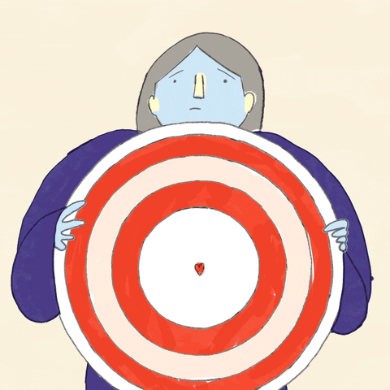

Overview Of Department :
Year of Establishment U. G. : 1999 - 2000
(Intake : First Shift - 120, Second Shift - 60)
P. G. (VLSI) : 2012 - 2013 (Intake : 18)
PhD research Center : 2017
DTE Code : 6175
Affiliated to : Savitribai Phule Pune University, Pune

Mission And Vision Of The Department:
VISION :
To serve the society by creating competent Electronics and Telecommunication engineers with value added quality education.
MISSION :
To produce competent and cultured Electronics and Telecommunication engineers through quality education by imparting attitude, knowledge, skills, project-based learning using well defined teaching learning process and excellent learning facilities to serve the needs of society.

Programme Educational Objectives (PEO's):
- To provide sound foundation in mathematics, basic science and fundamentals of E&TC engineering to the students.
- To provide students with good Electronics and Telecommunication Engineering breadth so as to enable them to comprehend, analyze, design, and create novel products and solutions for the real-life problems.
- To inculcate effective communication skills, teamwork spirit and professional ethics in students to meet employers need at large and prepare them for higher studies.
- To create awareness among students about social commitment and responsibilities.

PROGRAM SPECIFIC OUTCOMES (PSOs):
PSO1: Ability to comprehend and exhibit the competency in the areas of Electronics & Telecommunications Engineering like VLSI, Embedded Systems, Signal Processing, Communication, Computing and Automation
PSO2: Ability to design and analyse Electronics & Telecommunications systems using state of art hardware and software tools to address the needs of the industry and society.
PSO3: Ability to build research and problem-solving attitude to address the societal, environmental, health and safety issues, strengthen professional competency, imbibe ethical values for holistic development.